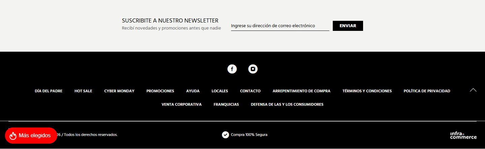
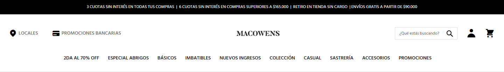
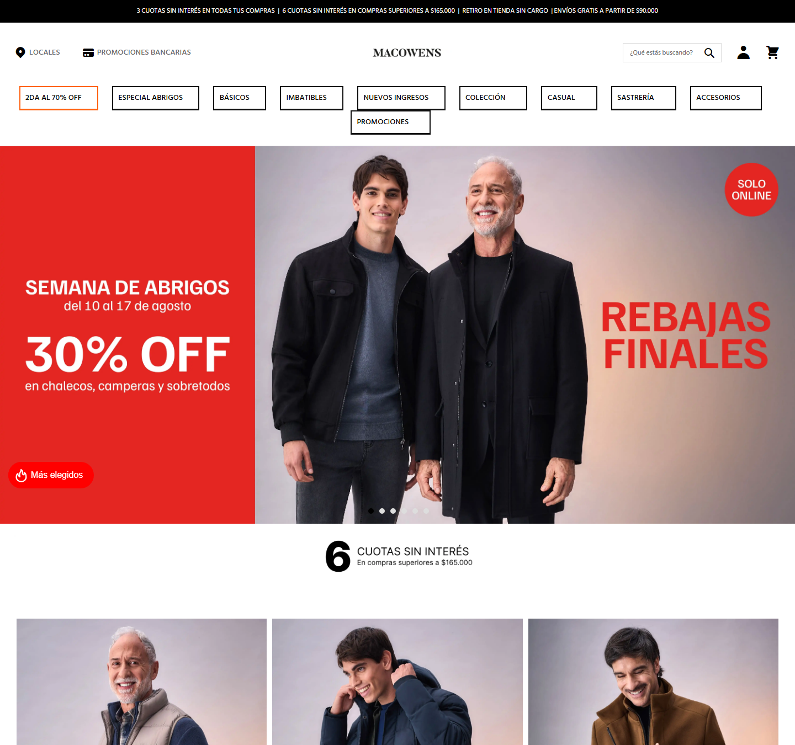
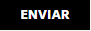
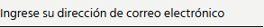

Generado a partir del análisis automatizado de https://www.macowens.com.ar/ el 2026-08-17T18:21:20.265Z.
> Copiá todo lo que sigue y pasáselo a la IA que va a construir la aplicación. Los valores son mediciones reales del sitio del cliente, no estimaciones.
Construir una aplicación web equivalente en estructura y propósito a macowens.com.ar, con mejor rendimiento, accesibilidad y mantenibilidad. Replicar la arquitectura de información y el tipo de componentes, no copiar textos, imágenes, logos ni marcas del original: usar contenido propio o placeholders.
Contexto del original: Macowens - Ropa de Hombre — En Macowens tenemos las mejores ofertas para que consigas Ropa de Hombre a precios increíbles. ¡Suscribite y recibí las novedades!
Detectado en el original: jquery, bootstrap · Magento, Slick, Google Fonts, Google Tag Manager, Google Analytics, Meta Pixel, Hotjar, Clarity
tailwind.config (el original usa CSS propio sobre Bootstrap).Color
| Rol | Valor | Uso en el original |
|---|---|---|
| surface-1 (fondo base) | #f0f0f0 | 1803 elementos |
| surface-2 | #ffffff | 370 elementos |
| surface-3 | #000000 | 268 elementos |
| surface-4 | #000080 | 204 elementos |
| surface-5 | #e42621 | 96 elementos |
| text-1 (texto base) | #000000 | 6691 elementos |
| text-2 | #686868 | 2562 elementos |
| text-3 | #ffffff | 376 elementos |
| text-4 | #666666 | 210 elementos |
| border-1 | #999999 | 2562 elementos |
| border-2 | #dddddd | 291 elementos |
Gradientes en uso: linear-gradient(rgb(255, 20, 0), rgb(255, 147, 0))
> Ajustar estos colores donde no lleguen a WCAG AA (ver sección 9) manteniendo la identidad.
Tipografía
| Elemento | font-size | weight | line-height |
|---|---|---|---|
| body | 14px | 400 | 19.6px |
| h3 | 22px | 400 | 26.4px |
| p | 12px | 400 | 16.8px |
| button | 14px | 400 | 19.6px |
| small | 12px | 400 | 16.8px |
Fuentes propias declaradas: Hind Siliguri (300, font-display: swap) · Hind Siliguri (400, font-display: swap) · Hind Siliguri (500, font-display: swap) · Hind Siliguri (600, font-display: swap). Cargarlas con font-display: swap y preload solo la del hero.
Consistencia del original: 3 familias, 11 tamaños, 4 pesos distintos. La escala es acotada: mantenerla.
Espaciado, radios y elevación
rgba(51, 51, 51, 0.2) 0px 0px 10px 0pxDefinir todo esto como variables CSS / tailwind.config y prohibir valores mágicos fuera de la escala.
| # | Sección | Encabezado | Alto | Layout | Contenido |
|---|---|---|---|---|---|
| 1 | div.slick-track | — | 684px (0.76 vh) | block | 12 img, 6 links |
| 2 | figure | — | 78px (0.09 vh) | block | 2 img, 1 links |
| 3 | div.pagebuilder-column-line | — | 654px (0.73 vh) | flex, 3 col | 6 img, 3 links |
| 4 | div.pagebuilder-column-line | — | 654px (0.73 vh) | flex, 3 col | 6 img, 3 links |
| 5 | div.pagebuilder-column-line | — | 558px (0.62 vh) | flex, 2 col | 24 img, 202 links, 47 btn, 25 items |
| 6 | div.pagebuilder-column-line | — | 558px (0.62 vh) | flex, 2 col | 32 img, 325 links, 64 btn, 34 items |
| 7 | div.pagebuilder-column-line | — | 558px (0.62 vh) | flex, 2 col | 46 img, 523 links, 93 btn, 49 items |
| 8 | iframe | — | 810px (0.9 vh) | block | — |
| 9 | figure | — | 660px (0.73 vh) | block | 2 img, 1 links |
| 10 | div.pagebuilder-column-line | — | 81px (0.09 vh) | flex, 3 col | 6 img |
| 11 | div.pagebuilder-column-line | — | 81px (0.09 vh) | flex, 3 col | 6 img, 2 links |
| 12 | figure | — | 75px (0.08 vh) | block | 2 img, 1 links |
Alto total del home: 6613px (7.3 viewports). 12 bloques de primer nivel.
Navegación principal
position: static.Footer: 1 columnas, 19 links, 2 redes, con formulario de newsletter.
| Componente | Cantidad en el original | Nota de implementación |
|---|---|---|
| links | 1279 | links internos con el router, externos con rel="noopener" |
| prices | 1152 | formateo de moneda centralizado (Intl.NumberFormat es-AR) |
| badges | 1014 | componente Badge con variantes semánticas |
| inputs | 580 | componente Input con label obligatorio |
| search | 580 | input tipo search con role="search" y resultados accesibles |
| buttons | 213 | un solo componente Button con variantes |
| addToCart | 213 | estado optimista + feedback accesible al agregar |
| images | 179 | componente de imagen optimizada (AVIF/WebP + sizes) |
| carousels | 131 | accesible por teclado, con pausa; considerar scroll-snap en lugar de librería |
| forms | 98 | validación accesible con mensajes asociados al campo |
| modals | 6 | <dialog> nativo o Radix, con foco atrapado y cierre por Escape |
| videosEmbeds | 2 | carga diferida con póster; no autoplay con sonido |
| svg | 1 | sprite o componentes de ícono, no SVG inline duplicado |
Variantes de botón detectadas (usar como base del componente Button)
| Variante | Usos | Fondo | Texto | Radio | Padding | Tamaño de fuente | Peso |
|---|---|---|---|---|---|---|---|
| primary | 14 | rgb(221, 221, 221) | rgb(255, 255, 255) | 10px | 0px | 14px | 400 |
| secondary | 4 | rgb(0, 0, 0) | rgb(255, 255, 255) | 10px | 0px | 14px | 400 |
| ghost | 1 | rgb(0, 0, 0) | rgb(255, 255, 255) | 0px | 0px | 14px | 400 |
El original tiene 3+ firmas de estilo distintas para botones: consolidar en 3-4 variantes (primary, secondary, ghost, destructive) × tamaños (sm, md, lg).
Formularios del original
https://www.macowens.com.ar/catalogsearch/result/, submit "Search": q (text)https://www.macowens.com.ar/checkout/cart/add/uenc/aHR0cHM6Ly93d3cubWFjb3dlbnMuY29tLmFyLw~~/product/122805/, submit "Agregar al Carrito": product (hidden), uenc (hidden), formkey (hidden), superattribute[649]* (text), superattribute[649]* (text), superattribute[649]* (text)https://www.macowens.com.ar/checkout/cart/add/uenc/aHR0cHM6Ly93d3cubWFjb3dlbnMuY29tLmFyLw~~/product/107480/, submit "Agregar al Carrito": product (hidden), uenc (hidden), formkey (hidden), superattribute[649]* (text), superattribute[649]* (text), superattribute[649]* (text)https://www.macowens.com.ar/checkout/cart/add/uenc/aHR0cHM6Ly93d3cubWFjb3dlbnMuY29tLmFyLw~~/product/89294/, submit "Agregar al Carrito": product (hidden), uenc (hidden), formkey (hidden), superattribute[649]* (text), superattribute[649]* (text), superattribute[649]* (text)Carruseles: 8 en el home (Slick), con 18/12/12/1/1/1/1/1 slides. Alguno tiene autoplay: en la nueva app el autoplay debe poder pausarse y respetar prefers-reduced-motion.
| Ancho | Cards por fila | Links de nav visibles | Alto de header | h1 |
|---|---|---|---|---|
| 360px | — | 12 | 123 | 16px |
| 390px | — | 12 | 123 | 16px |
| 768px | 1 | 10 | 268 | 18px |
| 1024px | 2 | 10 | 235 | 16px |
| 1280px | 2 | 10 | 206 | 16px |
| 1440px | 1 | 10 | 206 | 16px |
| 1920px | 1 | 10 | 206 | 16px |
Requisito duro: ningún breakpoint entre 320px y 1920px puede tener scroll horizontal.
:hover cambian: color, background-color, background-position-x, background-position-y, background-attachment@keyframes declarados.IntersectionObserver liviano, animando solo transform y opacity.prefers-reduced-motion.lang="es". Formatear moneda y fechas con Intl.alt. En la nueva app, alt es obligatorio (vacío solo si es decorativa).<label for> real, no solo placeholder.aria-label.h1. Usar exactamente uno por página.:focus-visible claro.title.width/height (causan CLS). Declarar siempre las dimensiones o usar next/image.srcset/sizes.loading="lazy" fuera del viewport inicial y priority solo para la del hero.Recortes reales de los componentes y zonas descriptos arriba (mismo orden que las tablas de la sección 5):
Carrusel Footer Header Primera sección / hero Navegación Botón variante 1 Botón variante 2 Botón variante 3 Input variante 1





| Métrica | Original | Objetivo |
|---|---|---|
| LCP | sin dato | < 2500 ms |
| CLS | 0 | < 0.1 |
| FCP | 356 ms | < 1800 ms |
| TTFB | 10 ms | < 800 ms |
| Requests | 816 | < 490 |
| Peso transferido | 10758 KB | < 6455 KB |
| Nodos DOM | 12331 | < 7399 |
| Imágenes sin alt | 10 | 0 |
| Inputs sin label | 288 | 0 |
| Fallos de contraste AA | 1 | 0 |
| Overflow horizontal | no | no, en ningún breakpoint |
| Errores de consola | 10 | 0 |
npm install && npm run dev.No incluir: logos, marcas, fotos ni textos del sitio original. Usar placeholders propios.